사회조사분석사-2급 (2014-05-25 기출문제)
1과목: 조사방법론 I
1. 양적연구와 질적 연구에 대한 설명으로 바르지 않은 것은?
- 양적연구는 연구대상의 관계를 통계적으로 분석을 통하여 밝히는 연구이다.
- 질적 연구는 주관적ㆍ해석적 연구방법이다.
- 양적연구는 확인 지향적 또는 확증적 연구방법이다.
- 질적 연구는 강제적 측정과 통제된 측정을 이용하는 방법이다.
(정답률: 69%)

2. 다음 사례에서 영향을 미칠 수 있는 대표적인 내적타당도 저해요인은?
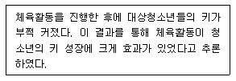
- 성숙효과(maturation)
- 외부사건(history)
- 검사효과(testing)
- 도구효과(instrumentation)
(정답률: 68%)
3. 설문조사를 직접 실시하지 않고, 2차 자료를 사용할 때의 장점으로 바르지 않은 것은?
- 1차 자료에 비해 신뢰도와 타당성이 보장된다.
- 설문조사를 시행하는 것보다 시간이 적게 든다.
- 설문조사를 시행하는 것보다 비용이 적게 든다.
- 누가 설문조사를 시행했느냐에 따라 최고 수준의 전문가들이 한 작업의 혜택을 받을 수 있다.
(정답률: 63%)
4. 질문지 작성원칙으로 바르지 않은 것은?
- 질문은 간결하게 한다.
- 질문은 명확하게 한다.
- 응답자의 수준에 맞는 언어를 사용한다.
- 질문은 가치판단적이어야 한다.
(정답률: 77%)
5. 면접법의 장점으로 바르지 않은 것은?
- 관찰을 병행할 수 있다.
- 신축성 있게 자료를 얻을 수 있다.
- 질문순서, 정보의 흐름을 통제할 수 있다.
- 익명성이 높아 솔직한 의견을 들을 수 있다.
(정답률: 75%)
6. 다음 중 실험설계의 내적타당도를 저해하는 요인으로 맞지 않은 것은?
- 특정사건의 영향
- 피실험자의 변화에 따른 영향
- 사전검사의 영향
- 반작용 효과
(정답률: 50%)
7. 가설의 특성에 관한 설명으로 바르지 않은 것은?
- 가설은 검증될 수 있어야 한다.
- 가설은 문제를 해결해 줄 수 있어야 한다.
- 가설이 부인되었다면 반대되는 가설이 검증된 것이다.
- 가설은 변수로 구성되며, 그들 간의 관계를 나타내고 있어야 한다.
(정답률: 67%)
8. 관찰기법 분류에 관한 설명으로 바르지 않은 것은?
- 컴퓨터브랜드 선호도 조사를 위해 판매 매장과 비슷한 상황을 만들어 표본으로 선발된 소비자로 하여금 제품을 선택하게 하여 행동을 관찰한다면 자연적 관찰이다.
- 응답자에게 자신이 관찰된다는 사실을 알려주고 관찰하는 것은 공개적 관찰이다.
- 관찰할 내용이 미리 명확히 결정되어, 준비된 표준양식에 관찰 사실을 기록하는 것은 체계적 관찰이다.
- 청소년의 인터넷 이용실태를 조사하기 위해 PC방을 방문하여 이용 상황을 옆에서 직접 지켜본다면 직접관찰이다.
(정답률: 71%)
9. 특정 연구대상이 시간이 지남에 따라 의견이나 태도가 변하는 경우에 사용하는 조사기법으로 연구대상을 구성하는 동일한 단위집단에 대하여 상이한 시점에서 반복하여 조사하는 것은 무엇인가?
- 횡단조사
- 비교조사
- 패널조사
- 집단조사
(정답률: 72%)
10. “비행의 결정요인에 대한 연구 : 소년원 재소자를 중심으로”라는 제목의 논문에서 분석단위는 무엇인가?
- 비행
- 결정요인
- 소년원
- 소년원 재소자
(정답률: 61%)
11. 설문지의 지시문에 들어갈 내용과 가장 거리가 먼 것은 무엇인가?
- 연구목적
- 연구자 신분
- 응답자 특성
- 표집방법
(정답률: 53%)
12. 실증주의적 과학관에서 주장하는 과학적 지식의 특징과 가장 거리가 먼 것은 무엇인가?
- 객관성(objectivity)
- 직관성(intuition)
- 재생가능성(reproducibility)
- 반증가능성(falsifiability)
(정답률: 61%)
13. 다음 4가지 연구 가운데 시간적 범위가 다른 것은 무엇인가?
- 추이연구(trend studies)
- 동류집단연구(cohort studies)
- 패널연구(panel studies)
- 횡단적연구(cross-sectional studies)
(정답률: 69%)
14. 연구결과 해석과정에서 발생할 수 있는 여러 가지 오류 중 구체적인 개별 사례에 근거하여 거시적 사건을 설명하는 경우에 발생하는 오류는 무엇인가?
- 생태학적 오류
- 개인주의적 오류
- 비표본 오류
- 체계적 오류
(정답률: 58%)
15. 다음 중 가설로 적합하지 않은 것은 무엇인가?
- 지연 때문에 행정의 발전이 저해된다.
- 부모간의 불화가 소년범죄를 유발한다.
- 기업 경영은 근본적으로 인간이 결정한다.
- 도시 거주자들이 농어촌에 거주하는 사람들 보다 더 야당성향을 띤다.
(정답률: 73%)
16. 관찰조사방법의 장점이 아닌 것은 무엇인가?
- 비언어적 자료를 수집하는데 효과적이다.
- 장기적인 연구조사를 할 수 있다.
- 환경변수를 완벽하게 통제할 수 있다.
- 자연적인 연구 환경이 확보되기 쉽다.
(정답률: 61%)
17. 과학적 연구에 관한 설명으로 바르지 않은 것은?
- 과학적 연구는 논리적 이론을 근거로 해서 진행된다.
- 과학적 연구는 연구결과의 일반화를 목적으로 한다.
- 과학적 연구의 결과는 수정될 수 없는 것이어야 한다.
- 과학적 연구는 다른 연구자에 의해서도 검증이 가능해야 한다.
(정답률: 74%)
18. 우편조사의 응답률을 높이는 방법과 가장 거리가 먼 것은 무엇인가?
- 응답 독촉은 단 한번 정중하게 한다.
- 공신력있는 기관을 연구 후원자로 밝힌다.
- 응답에 대한 적절한 보상(선물, 현금 등)을 한다.
- 우표를 직접 붙인 회수용 봉투를 우편 설문지와 함께 응답자에게 발송한다.
(정답률: 59%)
19. 소수의 집단을 대상으로 특정주제에 대하여 자유롭게 토론하여 필요한 정보를 얻는 방법은?
- 집단조사법
- 표적집단면접법
- 대인면접법
- 사례조사법
(정답률: 73%)
20. 내용분석에 적합한 주제로 바르지 않은 것은?
- 유명작가의 문체 분석
- 알코올이 운전행동에 미치는 영향 분석
- 한국 전래 동화에서 다루었던 주제 분석
- 1960년대 영국과 독일의 사회풍자 대중가요 가사 분석
(정답률: 66%)
21. 각종 학술 연구지, 상업잡지, 통계 자료집 등과 경영학, 사회학, 심리학, 인류학을 포괄하는 다양한 분야에서 출판되는 자료를 이용하는 조사방법은 무엇인가?
- 현지조사
- 패널조사
- 실험
- 문헌조사
(정답률: 74%)
22. 다음 내용은 무엇에 해당하는가?
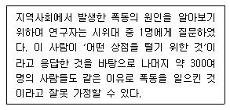
- 선별적 관찰
- 과도한 일반화
- 자아가 개입된 이해
- 도박사의 논리
(정답률: 72%)
23. 질문지를 작성할 때의 질문의 순서에 관한 설명으로 바르지 않은 것은?
- 첫 번째 질문은 가능한 한 쉽게 응답할 수 있고 흥미를 유발할 수 있는 것이 좋다.
- 응답자의 연령이나 소득과 같이 개인적인 질문은 뒷부분에서 하는 것이 좋다.
- 산업에 관련된 질문 시, 특정품목에 대한 문항에서 산업 전체에 관련된 문항으로 배열하는 것이 좋다.
- 질문 간에 연상 작용을 일으켜 다음 응답에 영향을 미칠 경우에는 이러한 질문들 사이의 간격을 멀리 떨어뜨리는 것이 좋다.
(정답률: 72%)
24. 일반적으로 질적 연구(Qualitative Rese arch)를 위해 많이 이용하는 방법은 무엇인가?
- 관찰조사
- 전화조사
- 질문지조사
- 실험조사
(정답률: 63%)
25. 사화과학에서 조사연구를 실시하기에 적합한 주제가 아닌 것은 무엇인가?
- 지능지수와 학업성적은 상관성이 있는가?
- 기업복지의 수준과 노사분규의 빈도와의 관계는?
- 여성들은 직장에서 차별대우를 받고 있는가?
- 개기일식은 왜 일어나는가?
(정답률: 73%)
26. 어떤 연구 도중에 위약효과(placebo effect)가 크게 나타났을 때, 이 연구에서 유의해야 할 점은 무엇인가?
- 연구대상자 수를 줄여야 한다.
- 사전조사와 본조사의 간격을 줄여야 한다.
- 연구결과를 일반화시키지 말아야 한다.
- 연구대상자에게 피험자임을 인식시켜야 한다.
(정답률: 53%)
27. 실험변수가 아니면서 결과변수에 영향을 주는 일종의 독립변수로서 최대한으로 그 영향이 제거되거나 상쇄될 수 있도록 해야 하는 실험설계의 기본요소는?
- 조절변수
- 종속변수
- 외생변수
- 매개변수
(정답률: 54%)
28. 면접조사에서 응답자에게 면접에 참여하고자 하는 동기를 부여하는 요인들 중 긍정적인 요인이라고 할 수 없는 것은 무엇인가?
- 면접자를 돕고 싶은 이타적 충동
- 물질적 보상과 같은 혜택에 대한 기대
- 사생활 침해에 대한 오인과 자기방어 욕구
- 자신의 의견이나 식견을 표현하고 싶은 욕망
(정답률: 66%)
29. 폐쇄형 질문에서 응답범주와 관련된 설명으로 옳은 것은?
- 가능한 모든 응답을 제시해 주어야 한다.
- 정확한 의미전달을 위해 범주의 내용을 일부 중복해야 한다.
- 응답범주를 설정할 단계에서는 분석기법을 고려하지 않는 것이 좋다.
- 중립적인 의견을 표시할 수 있는 범주를 반드시 포함시켜야 한다.
(정답률: 58%)
30. 소득수준과 출산력의 관계를 알아볼 때, 모든 조사대상자의 소득수준과 출산자녀수 간의 관계를 살펴본 후 개별사례를 바탕으로 어떤 일반적 유형을 찾아내는 방법은 무엇인가?
- 연역적 방법
- 귀납적 방법
- 참여관찰법
- 질문지법
(정답률: 58%)
2과목: 조사방법론 II
31. 표집오차(sampling error)에 대한 설명으로 바르지 않은 것은?
- 표본의 분산이 작을수록 표집오차는 작아진다.
- 표본의 크기가 클수록 표집오차는 작아진다.
- 표집오차란 통계량들이 모수 주위에 분산되어 있는 정도를 말한다.
- 표본의 크기가 같을 때 단순무작위 표집에서보다 집락표집에서 표집오차가 작다.
(정답률: 50%)
32. 표본추출방법에 대한 설명 중 바르지 않은 것은?
- 단순무작위표집을 하기 위해서는 모집단에 대한 명부를 표집틀로 가지고 있어야 한다.
- 모집단에 대한 명부가 일정한 주기성을 가지고 있을 때 이 주기성 때문에 편중된 표집을 할 위험이 있는 표집방법은 층화표집이다.
- 층화표집은 단순무작위추출에서 얻어진 표본보다 모집단을 더 잘 대표하기도 한다.
- 유의집단은 연구자가 주관적으로 판단하여, 모집단을 가장 잘 대표한다고 생각되는 사례들을 표본으로 선정한다.
(정답률: 60%)
33. 청소년의 흡연 실태를 조사하기 위해 5명의 흡연 청소년을 면접한 후, 이들로부터 알고 있는 흡연 청소년을 각기 5명씩 소개받고, 소개받은 이들로부터 다시 각각 5명씩 소개받아 모두 155명을 면접 조사하는 표집방법은 무엇인가?
- 편의표집
- 유의표집
- 눈덩이표집
- 할당표집
(정답률: 72%)
34. 조사대상자가 표본으로 선정될 확률이 동일하지 않은 것은?
- 층화표집
- 집락표집
- 유의표집
- 단순무작위표집
(정답률: 67%)
35. 다음 중 조작적 정의에 관한 설명으로 바르지 않은 것은?
- 주어진 단어가 이미 정립된 의미를 가진 다른 표현과 동의적일 때에 사용된다.
- 용어의 지시물을 식별하는데 사용되는 관찰 가능한 개념의 구체화이다.
- 정의된 변수는 그것의 관찰과 측정의 단계가 분명히 밝혀져 있을 때 조작적으로 정의될 수 있다.
- 숫자로 측정될 수 있는 항목들을 추출해낸다.
(정답률: 52%)
36. 사화조사에서 개념의 재정의(reconcep tualization)가 필요한 이유와 가장 거리가 먼 것은 무엇인가?
- 사회조사에서 사용되는 개념은 일상생활에서 통상적으로 사용되는 상투어와는 그 의미가 다를 수 있기 때문이다.
- 동일한 개념이라도 사회가 변함에 따라 그 원래의 뜻이 변할 수 있기 때문이다.
- 한 가지 개념이라도 두 가지 또는 그 이상의 다양한 의미를 가지고 있을 가능성이 많으므로, 이들 각기 다른 의미 중에서 어떤 특정의 의미를 조사연구 대상으로 삼을 것인가를 밝혀야 하기 때문이다.
- 개념과 개념 간의 상관관계가 아닌 인과관계를 밝혀야 하기 때문이다.
(정답률: 69%)
37. 구성타당도(construct validity)에 대한 설명으로 바르지 않은 것은?
- 이론과 관련하여 측정도구의 타당도를 검증한다.
- 구성타당도를 측정할 수 있는 방법으로 요인분석 등이 있다.
- 측정도구가 특정 준거와 어느 정도 관련성이 있는지를 나타내는 타당성이다.
- 측정값 자체보다 측정하고자 하는 속성에 초점을 맞춘 타당성이다.
(정답률: 31%)
38. 신뢰도와 타당도에 관한 설명 중 바르지 않은 것은?
- 타당도가 있는 측정은 항상 신뢰도가 있다.
- 타당도가 신뢰도에 비해 확보하기가 용이하다.
- 타당도가 완전한 측정도구는 신뢰도도 완전하다.
- 신뢰도가 있는 측정은 타당도가 있을 수도 있고 없을 수도 있다.
(정답률: 54%)
39. 잠재변수와 관찰변수에 관한 설명으로 바르지 않은 것은?
- 잠재변수란 직접 관찰이 불가능한 변수를 의미한다.
- 대학생의 성적을 평점평균으로 나타낸 것은 관찰변수에 해당한다.
- 하나의 잠재변수를 측정하기 위해 하나의 관찰변수를 사용하는 것이 바람직하다.
- 지능, 태도, 직무만족도는 잠재변수에 해당한다.
(정답률: 56%)
40. 판단표집(purposive sampling)에 대한 설명으로 가장 거리가 먼 것은 무엇인가?
- 목적표집이라고도 한다.
- 연구자의 주관적인 판단에 의한 표집이다.
- 계량적인 연구보다는 질적인 조사연구에 더욱 적절하다.
- 연구자가 모집단과 그 구성요소에 대한 풍부한 사전지식을 갖고 있어야 한다.
(정답률: 44%)
41. 다음은 어떤 척도의 특징인가?
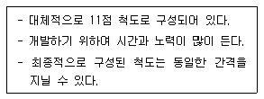
- 리커트(Likert) 척도
- 서스톤(Thurstone) 척도
- 보가더스(Bogardus) 척도
- 오스굿(Osgood) 척도
(정답률: 68%)
42. 관찰된 현상의 경험적인 속성에 대해 일정한 규칙에 따라 수치를 부여하는 것은 무엇인가?
- 측정(measurement)
- 척도(scale)
- 지표(indicator)
- 변수(variable)
(정답률: 61%)
43. A보험사에 가입한 고객을 대상으로 만족도 조사를 시행하려고 한다. 만약 A보험사에 최근 1년 동안 가입한 고객 명단을 표본틀로 사용하여 표본을 추출한다면 이 때의 표본틀 오류는 무엇인가?
- 모집단이 표본틀에 포함되는 경우
- 표본틀이 모집단 내에 포함되는 경우
- 모집단과 표본틀이 동일한 경우
- 모집단과 표본틀이 전혀 일치하지 않는 경우
(정답률: 54%)
44. 3가지의 변수가 다음과 같은 순서로 영향을 미칠 때 사회적 통합을 무슨 변수라고 하는가?
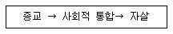
- 외적변수
- 매개변수
- 구성변수
- 선행변수
(정답률: 65%)
45. 다음 표집 방법 중 표집오차의 추정이 확률적으로 가능한 것은 무엇인가?
- 할당표집
- 유의표집
- 눈덩이표집
- 단순무작위표집
(정답률: 67%)
46. 신뢰도에 관한 설명으로 바르지 않은 것은?
- 예측가능성을 가져야 한다.
- 신뢰도계수의 범위는 -1.00에서 +1.00 사이의 값을 갖는다.
- 시간에 구애받지 않고 일관된 측정치를 가져야 한다.
- 같은 개념을 측정하는 유사한 척도를 적용하여 측정하여도 같은 결과를 가져와야 한다.
(정답률: 54%)
47. 100명의 학생들이 오늘 어떤 검사를 받고 한 달 후에 동일한 검사를 다시 받았는데 두 번의 검사에서 각 학생의 점수는 동일했다. 이 경우의 검사-재검사 신뢰도는 얼마인가?
- 0.00
- +1.00
- -1.00
- 주어진 정보로는 알 수 없다.
(정답률: 59%)
48. 거트만척도에 관한 설명으로 바르지 않은 것은?
- 척도를 구성하는 과정에서 문항들의 단일차원성이 경험적으로 검증되도록 설계된 척도이다.
- 재생계수가 1일 경우에는 이상적인 거트만척도에 접근하여 완벽한 척도구성 가능성을 갖는다.
- 거트만척도는 단일차원적이고 누적적이다.
- 문항분석 시 제1사분위 이하 집단의 평균과 제3사분위 이상 집단의 평균 간의 차이가 클수록 판별력이 좋은 문항이다.
(정답률: 43%)
49. 총화평정척도에 대한 설명으로 바르지 않은 것은?
- 리커트 타입의 척도라고도 한다.
- 각 문항이 하나의 척도이며 전체 문항의 총점이 태도의 측정치로 본다.
- 평가자의 주관이 개입될 가능성이 높다.
- 예비적 문항으로 응답 카테고리를 결정해 내적일관성 여부에 따라 최종척도를 구성한다.
(정답률: 41%)
50. 다음 중 비확률표집이 아닌 것은 무엇인가?
- 편의표집
- 유의표집
- 할당표집
- 층화표집
(정답률: 72%)
51. 다음 중 인터넷을 활용한 사회조사의 가장 큰 문제점은 무엇인가?
- 자료입력의 오류
- 추정값의 편향
- 표본오차의 증가
- 분석기법 적용의 어려움
(정답률: 38%)
52. 다음 중 집락표집과 층화표집의 특징으로 올바른 것은?
- 집락표집과 층화표집 모두 내부적으로 동질적이다.
- 집락표집은 내부적으로 동질적이다.
- 층화표집은 내부적으로 이질적이다.
- 집락표집은 내부적으로 이질적이다.
(정답률: 66%)
53. 지표가 가져야 할 요건으로 맞지 않는 것은 무엇인가?
- 신뢰성
- 타당성
- 복잡성
- 체계성
(정답률: 65%)
54. 층화표본추출에 대한 설명으로 바르지 않은 것은?
- 확률표본추출방법이다.
- 표본층 간은 동질적이고 표본층 내에서는 이질적이다.
- 층화한 모든 부분집단에서 표본을 추출한다.
- 모집단의 각 층에 대한 정확한 정보가 필요하다.
(정답률: 70%)
55. 사회적 거리척도로서 집단 간 거리측정이 아니라 집단 내 구성원간의 거리를 측정하는데 유용한 방법은 무엇인가?
- 서스톤 척도(thurston scale)
- 거트만 척도(guttman scale)
- 소시오메트리(sociometry)
- 보가더스 척도(bogardus scale)
(정답률: 59%)
56. 표본추출에서 가장 중요한 요인은 무엇인가?
- 대표성과 경제성
- 대표성과 신속성
- 대표성과 적절성
- 정확성과 경제성
(정답률: 53%)
57. 타당성에 관한 설명으로 옳은 것을 모두 고른 것은?
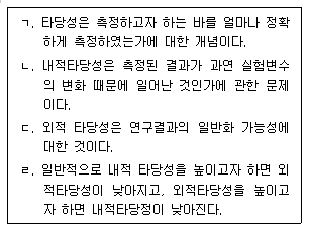
- ㄱ
- ㄱ, ㄴ
- ㄱ, ㄴ, ㄷ
- ㄱ, ㄴ, ㄷ, ㄹ
(정답률: 53%)
58. 사회조사에서는 어떤 태도를 측정하기 위해 단일지표보다 여러 개의 지표를 사용하는 경우가 많다. 그 이유로서 바르지 않은 것은?
- 신뢰도를 높이기 위해
- 타당도를 높이기 위해
- 내적일관성을 높이기 위해
- 측정도구의 안정성을 높이기 위해
(정답률: 42%)
59. 지수와 척도에 관한 설명으로 바르지 않은 것은?
- 지수와 척도 모두 변수의 합성측정이다.
- 척도와 지수 모두 변수에 대한 서열측정이다.
- 지수점수는 척도점수보다 더 많은 정보를 전달한다.
- 척도는 동일한 변수의 속성들 가운데서 그 강도의 차이를 이용하여 구별되는 응답 유형을 밝혀낸다.
(정답률: 44%)
60. 다음 ( )에 알맞은 것은 무엇인가?
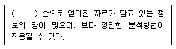
- 서열측정>명목측정>비율측정>등간측정
- 명목측정>서열측정>등간측정>비율측정
- 등간측정>비율측정>서열측정>명목측정
- 비율측정>등간측정>서열측정>명목측정
(정답률: 73%)
3과목: 사회통계
61. 어느 지역에서 A후보의 지지도를 알아보기 위하여 무작위로 추출한 100명에게 의견을 물어보았다. 이 중 50명이 A후보를 지지한다고 응답하였다. A후보 지지율에 대한 95% 신뢰구간을 소수 셋째자리에서 반올림하여 둘째자리까지 구하면?
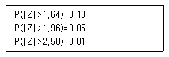
- 0.40≤P≤0.60
- 0.45≤P≤0.55
- 0.42≤P≤0.58
- 0.41≤P≤0.59
(정답률: 36%)
62. 행변수가 M개의 범주를 갖고 열변수가 N개의 범주를 갖는 분할표에서 행변수와 열변수가 서로 독립인지를 검정하고자 한다. (i. j)셀의 관측도수를 Oij, 귀무가설 하에서의 기대도수의 추정치를
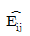
라 할 때, 이 검정을 위한 검정통계량은 무엇인가?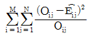
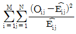
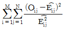
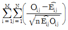
(정답률: 53%)
63. 단일 모집단의 모분산의 검정에 사용되는 분포는 무엇인가?
- 정규분포
- 이항분호
- 카이제곱분포
- F- 분포
(정답률: 35%)
64. 다음은 두 종류의 타이어 평균수명에 차이가 있는지를 확인하기 위하여 각각 30개의 표본을 추출하여 조사한 결과이다. (두 표본은 독립이고, 대표본임을 가정한다.) 두 타이어의 평균수명에 차이가 있는지를 유의수준 5%에서 검정한 결과는?
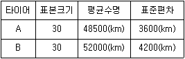
- 두 타이어의 평균수명에 통계적으로 유의한 차이가 없다.
- 두 타이어의 평균수명에 통계적으로 유의한 차이가 있다.
- 두 타이어의 평균수명이 완전히 일치한다.
- 주어진 정보만으로는 알 수 없다.
(정답률: 47%)
65. 자료들의 분포형태와 대푯값에 관한 설명 중 올바른 것은?
- 오른쪽 꼬리가 긴 분포에서는 중앙값이 평균보다 크다.
- 왼쪽 꼬리가 긴 분포에서는 최빈값<평균<중앙값 순이다.
- 중앙값은 분포와 무관하게 최빈값보다 작다.
- 비대칭의 정도가 강한 경우에는 대푯값으로 평균보다 중앙값을 사용하는 것이 더 바람직하다고 할 수 있다.
(정답률: 50%)
66. 액화천연가스의 저장기지 후보지로 고려되고 있는 세 지역으로부터 90명을 조사하여 90명 중 후보지를 지지하는 사람 수가 각각 다음과 같이 나타났다. 후보지에 대한 지지율이 동일한지를 검정하는 카이제곱 통계량 값과 자유도를 구하면?
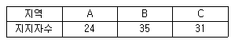
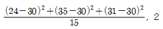
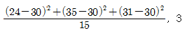
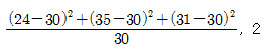
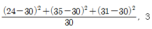
(정답률: 55%)
67. 상관관계(correlation)에 대한 설명으로 올바른 것은?
- 두 변수 간에 강한 상관관계가 존재하면 두 변수는 서로 독립적이라고 한다.
- 두 변수 간의 상관관계로부터 인과관계를 도출할 수 있다.
- 두 변수 간에 상관관계가 없다면 피어슨 상관계수의 값의 0이다.
- 피어슨 상관계수의 값은 항상 0이상 1이하이다.
(정답률: 42%)
68. 중회귀분석에서 회귀계수에 대한 검정과 결정계수가 아래와 같을 때의 설명으로 바르지 않은 것은? (결정계수 = 0.891)
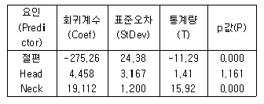
- 설명변수는 Head와 Neck이다.
- 회귀계수 중 통계적 유의성이 없는 변수는 절편과 Neck이다.
- 위 중회귀모형은 자료 전체의 산포 중에서 약 89.1%를 설명하고 있다.
- 회귀방정식에서 다른 요인을 고정시키고 Neck이 한 단위 증가하면 반응값은 19.112가 증가한다.
(정답률: 35%)
69. 창수는 공정한 동전 1개를 3회 던져, 나타나는 앞면의 횟수 당 10만원의 상금을 받는 게임을 하기로 하였다. 게임을 한 번 할 때마다 10만원을 내고 한다면, 이 게임을 한 번 할 때마다 얼마의 금액을 벌 것으로 기대되는가?
- 3만원
- 4만원
- 5만원
- 6만원
(정답률: 46%)
70. 어떤 대학의 취업정보센터에서 취업률(%)를 높이기 위한 실험을 실시하였다. 대학 내 취업교육을 이수한 횟수(열 : 없음, 1회, 2회 이상)에 대해 각각 8명씩 무작위로 뽑아 검정을 실시한 결과이다. 분석에 대한 설명으로 바르지 않은 것은?
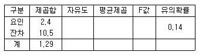
- 일원분산분석을 실시한 결과이다.
- 잔차 제곱합에 대한 자유도는 21이다.
- 요인에 대한 평균제곱은 0.8이다.
- F값은 2.4이다.
(정답률: 44%)
71. 다음 중 중앙값과 동일한 측도는 무엇인가?
- 최빈값
- 평균
- 제3사분위수
- 제2사분위수
(정답률: 43%)
72. 다음 분산분석 결과표의 ( )에 알맞은 것은 무엇인가?
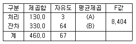
- A : 47.81, B : 7.62
- A : 45.64, B : 6.49
- A : 43.33, B : 5.16
- A : 41.07, B : 4.67
(정답률: 52%)
73. 단순회구모형
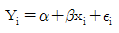
을 적합하여 다음과 같은 분산분석표를 작성하였다. H0:β=0, H1β≠0에 대한 가설검정을 수행하면? (단, 자유도가 n1=1, n2=7인 F분포에서 유의수준 α=0.⑤인 경우 F(1,7;0.0 5)=5.59, 유의수준 α=0.01인 경우 F(1,7;0. 01)=12.25이다)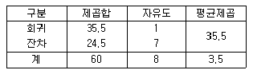
- 유의수준 =0.⑤와 α=0.01 모두에서 귀무가설을 기각한다.
- 유의수준 α=0.⑤와 α=0.01 모두에서 귀무가설을 기각하지 못한다.
- 유의수준 α=0.⑤에서 귀무가설을 기각하고, α=0.01에서 귀무가설을 기각하지 못한다.
- 유의수준 α=0.⑤에서 귀무가설을 기각하지 못하고, α=0.01에서 귀무가설을 기각한다.
(정답률: 42%)
74. 중회귀모형
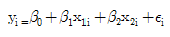
에 대한 분산분석표가 다음과 같다. 위의 분산분석표를 이용하여 유의수준 0.⑤에서 모형에 대한 유의성검정을 할 때, 추론 결과로 가장 적합한 것은 무엇인가?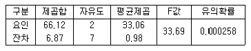
- 두 설명변수 x1과 x2 모두 반응변수에 영향을 주지 않는다.
- 두 설명변수 x1과 x2 모두 반응변수에 영향을 준다.
- 두 설명변수 x1과 x2 중 적어도 하나는 반응변수에 영향을 준다.
- 두 설명변수 x1과 x2 중 하나만 반응변수에 영향을 준다.
(정답률: 44%)
75. 오른쪽으로 꼬리가 길게 늘어진 형태의 분포에 대해 옳은 설명만을 짝지어진 것은?
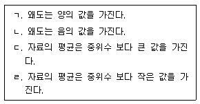
- ㄱ, ㄷ
- ㄱ, ㄹ
- ㄴ, ㄷ
- ㄴ, ㄹ
(정답률: 50%)
76. 도수분표가 비대칭이고 극단치들이 있을 때 보다 적절한 중심성향 척도는 무엇인가?
- 산술평균
- 중위수
- 최빈수
- 조화평균
(정답률: 55%)
77. 어느 자동차 회사의 영업 담당자는 영업 전략의 효과를 검정하고자 한다. 영업사원 10명을 무작위로 추출하여 새로운 영업 전략을 실시하기 전과 실시한 후의 영업성과(월판매량)를 조사하였다. 영업사원의 자동차 판매량의 차이는 정규분포를 따른다고 하자. 유의수준 5%에서 새로운 영업 전략이 효과가 있는지 검정한 결과는 무엇인가? (단, 유의수준 5%에 해당하는 자유도 9인 t분포값은 -1.833 이다.)
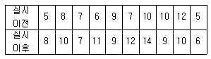
- 새로운 영업 전략의 판매량 증가 효과가 있다고 할 수 있다.
- 새로운 영업 전략의 판매량 증가 효과가 없다고 할 수 있다.
- 새로운 영업전략 실시전후 판매량은 같다고 할 수 있다.
- 주어진 정보만으로는 알 수 없다.
(정답률: 46%)
78. 정규모집단 n(μ,9)로부터 n=4인 확률표본을 추출하였을 때, 표본평균
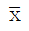
를 표준화한 것은 무엇인가?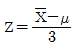
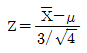
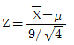
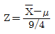
(정답률: 51%)
79. 다음은 무엇에 관한 설명인가?
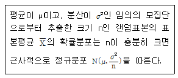
- 중심극한정리
- 정규분포
- 이항분포
- 표본분포
(정답률: 52%)
80. 다음 단순회귀모형에 관한 설명으로 올바른 것은? (단,
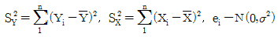
)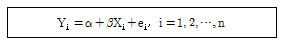
- X와 Y의 표본상관계수를 r이라 하면 β의 최소 제곱추정량은
 이다.
이다. - 모형에서 Xi와 Yi를 바꾸어도 β의 추정량은 같다.
- X가 Y의 변동을 설명하는 정도는 결정계수로 계산되며 Y의 변동이 작아질수록 결정 계수는 높아진다.
- 오차항
 의 분산이 동일하지 않아도 무방하다.
의 분산이 동일하지 않아도 무방하다.
(정답률: 32%)
81. 가설검증의 오류에 대한 설명으로 바르지 않은 것은?
- 제2종 오류는 대립가설(H1)이 사실일 때 귀무가설(H0)을 채택하는 오류이다.
- 가설검증의 오류는 유의수준과 관계가 있다.
- 제1종 오류를 적게 하기 위해서는 유의수준을 크게 할 필요가 있다.
- 제1종 오류와 제2종 오류를 범할 가능성은 반비례관계에 있다.
(정답률: 55%)
82. 확률변수 X의 확률분포가 다음과 같다. 평균과 분산으로 올바른 것은?
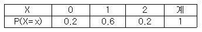
- 1.0, 0.4
- 0.8, 0.4
- 1.0, 0.2
- 0.8, 0.2
(정답률: 47%)
83. 어떤 사람이 5일 연속 즉석당첨복권을 구입한다고 하자. 어느 날 당첨될 확률은 1/5이고, 어느 날 구입한 복권의 당첨여부가 그 다음날 구입한 복권의 당첨여부에 영향을 미치지 않는다면, 2장의 당첨복권과 3장의 무효 복권을 구매할 확률은 얼마인가?
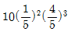
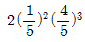
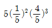
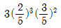
(정답률: 42%)
84. 모평균과 모분산이 각각 μ, σ2인 무한모집단으로부터 추출한 크기 n의 랜덤표본에 근거한 표본평균
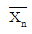
의 확률분호에 대한 설명에서 바르지 않은 것은?- 표본평균
 의 기댓값은 표본의 크기 n에 관계없이 항상 모평균 μ와 같으나 표본평균
의 기댓값은 표본의 크기 n에 관계없이 항상 모평균 μ와 같으나 표본평균  의 표준편차는 표본의 크기 n이 커짐에 따라 점점 작아져 0으로 가까이 가게 된다.
의 표준편차는 표본의 크기 n이 커짐에 따라 점점 작아져 0으로 가까이 가게 된다. - 모집단의 확률분포가 정규분포이면 표본평균
 역시 정규분포를 따른다.
역시 정규분포를 따른다. - 모집단의 분포가 무엇이든 관계없이 표본평균
 의 확률분포는 표본의 크기가 커짐에 따라 근사적으로 평균이 μ이고 분산이 σ2/n인 정규분포를 따른다.
의 확률분포는 표본의 크기가 커짐에 따라 근사적으로 평균이 μ이고 분산이 σ2/n인 정규분포를 따른다. - 모집단의 확률분포가 좌우 비대칭인 분포이면 표본평균
 의 확률분포는 정규분포를 따르지 않는다.
의 확률분포는 정규분포를 따르지 않는다.
(정답률: 33%)
85. 표준정규분포를 따르는 확률변수의 제곱은 어떤 분포를 따르는가?
- 정규분포
- t-분포
- F-분포
- 카이제곱분포
(정답률: 48%)
86. 다음과 같은 단순회귀식이 있을 때 α, β의 최소제곱 추정값은 무엇인가?
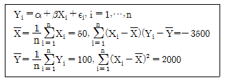
- 187.5, -1.75
- 190.5, -2.75
- 200.5, -1.75
- 187.5, -2.75
(정답률: 39%)
87. 통계학 과목을 수강한 학생 가운데 학생 10명을 추출하여, 그들의 강의에 결석한 시간(X)과 통계학점수(Y)를 조사하여 다음 표를 얻었다. 단순 선형 회귀분석을 수행한 다음 결과의 ( )에 들어갈 것으로 틀린 것은 무엇인가?(오류 신고가 접수된 문제입니다. 반드시 정답과 해설을 확인하시기 바랍니다.)
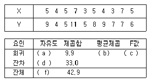
- a = 1,b = 9.9
- d = 8,e = 4.125
- c = 2.4
- g = 0.7
(정답률: 40%)
88. 점추정치(point estimate)에 관한 설명 중 틀린 것은 무엇인가?
- 표본의 크기가 커질수록, 표본으로부터 구한 추정치가 모수와 다를 확률이 0에 가깝다는 것을 일치성(consistency)이 있다고 한다.
- 표본에 의한 추정치 중에서 중위수는 평균보다 중앙에 위치하기 때문에 더욱 효율성(efficiency) 가 있는 추정치가 될 수 있다.
- 좋은 추정량의 성질 중 하나는 추정량의 기댓값이 모수값이 되는 것인데 이를 불편성(unbiasedness)이라 한다.
- 좋은 추정량의 성질 중 하나는 추정량의 값이 주어질 때 조건부 분포가 모수에 의존하지 않는다는 것이며 이를 충분성(sufficiency)이라 한다.
(정답률: 32%)
89. 자료
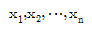
의 표준편차가 3일 때,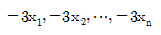
의 표준편차는?- -3
- 9
- 3
- -9
(정답률: 40%)
90. 크기가 100인 표본에서 구한 모평균에 대한 95% 신뢰구간의 길이가 0.2라고 한다면 표본크기를 400으로 늘렸을 때의 95% 신뢰구간의 길이는?
- 0.⑤
- 0.1
- 0.15
- 구할 수 없다
(정답률: 41%)
91. 전체 인구의 2%가 어느 질병을 앓고 있다고 한다. 이 질병을 검진하기 위해 사용되고 있는 어느 진단 시약은 질병에 걸린 사람 중 80%, 질병에 걸리지 않은 사람 중 10%에 대해 양성반응을 보인다. 어떤 사람의 진단 테스트 결과가 양성반응일 때, 이 사람이 질병에 걸렸을 확률을 얼마인가?
- 7/54
- 8/57
- 10/57
- 11/57
(정답률: 40%)
92. 두 변수 X와 Y사이의 관계를 알아보기 위해 조사한 결과 다음과 같은 자료를 얻었다. 두 변수의 관련성에 대한 분석으로 올바른 것은?
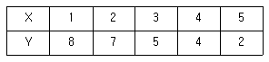
- X와 Y사이에 양의 상관관계가 존재한다.
- X와 Y사이에 상관관계는 0이다.
- X와 Y사이에 음의 상관관계가 존재한다.
- X와 Y사이의 상관관계는 알 수 없다.
(정답률: 48%)
93. 우리나라 대삭생들의 독서시간은 1주일동안 평균 20시간, 분산 9인 정규분포라고 알려져 있다. 이를 확인하기 위해 36명의 학생을 조사하였더니 평균이 19시간으로 나타났다. 이를 이용하여 우리나라 대학생들의 평균 독서시간이 20시간보다 작다고 말할 수 있는지 검정한다고 할 때 다음 중 올바른 것은?
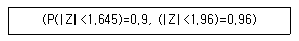
- 검정통계량을 계산하면 -2가 된다.
- 가설 검정에는 X2분포가 이용된다.
- 유의수준 0.⑤에서 우리나라 대학생들의 평균 독서시간이 20시간보다 작다고 말할 수 없다.
- 표본분산이 알려져 있지 않아 가설 검정을 수행할 수 없다.
(정답률: 30%)
94. 가설검정 시 대립가설(H1)이 사실인 상황에서 귀무가설(H0)을 기각할 확률은?
- 검정력
- 신뢰수준
- 유의수준
- 제2종 오류를 범할 확률
(정답률: 44%)
95. 어느 농구선수의 자유투 성공률은 70%라고 알려져 있다. 이 선수가 자유투를 20회 던진다면 몇 회 정도 성공할 것으로 기대되는가?
- 7
- 8
- 16
- 14
(정답률: 62%)
96. 실험계획에서 데이터의 산포에 영향을 미치는 것으로 실험환경이나 실험조건을 나타내는 변수는?
- 인자
- 실험단위
- 수준
- 실험자
(정답률: 56%)
97. 이라크 파병에 대한 여로조사를 실시했다. 100명을 무작위로 추출하여 조사한 겨로가 56명이 파병에 대해 찬성했다. 이 자료로부터 파병을 찬성하는 사람이 전 국민의 과반수이상이 되는지를 유의수준 5%에서 통계적 가설검정을 실시 했다. 다음 중 옳은 것은?
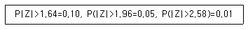
- 이 자료의 통계적 분석으로 한국인의 찬성률이 과반수이상이라고 결론을 내릴 수 있다.
- 이 자료의 통계적 분석으로 한국인의 찬성률이 과반수이상이라고 결론을 내릴 수 없다.
- 이 자료의 통계적 분석으로 표본의 수가 부족해서 결론을 얻을 수 없다.
- 표본 중 과반수이상이 찬성하여서 찬성률이 과반수이상이라고 결론을 내릴 수 있다.
(정답률: 32%)
98. 다음 자료는 A병원과 B병원에서 각각 6명의 환자를 상대로 하여 환자가 병원에 도착하여 진료서비스를 받기까지의 대기시간(단위 : 분)을 조사한 것이다.
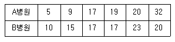
- A병원 평균=B병원 평균, A병원 분산<B병원 분산
- A병원 평균=B병원 평균, A병원 분산>B병원 분산
- A병원 평균>B병원 평균, A병원 분산<B병원 분산
- A병원 평균<B병원 평균, A병원 분산>B병원 분산
(정답률: 59%)
99. 일원배치법모형에서 분산분석을 이용한 분산분석표에 관한 설명으로 바르지 않은 것은?
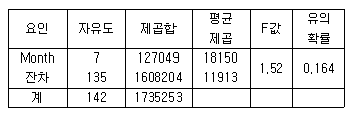
- 총 관측자료 수는 142개이다.
- 인자는 Month로서 수준 수는 8개이다.
- 오차항의 분산 추정값은 11913이다.
- 유의수준 0.⑤에서 인자의 효과가 인정되지 않는다.
(정답률: 49%)
100. 8개의 붉은 구슬과 2개의 푸른 구슬이 들어 있는 주머니가 있다. 10명이 차례로 주머니에서 구슬을 하나씩 꺼내 가질 때, 2번째 사람이 푸른 구슬을 꺼내 가지게 될 확률을 얼마인가?
- 1/4
- 1/5
- 2/5
- 3/5
(정답률: 46%)
질적 연구는 대개 인터뷰, 관찰, 참여 관찰 등을 통해 연구 대상의 경험, 태도, 행동 등을 이해하고 해석하는 방법입니다. 따라서 연구자의 주관적인 해석과 분석이 중요한 역할을 합니다.
반면 양적 연구는 통계적 분석을 통해 연구 대상의 관계를 확인하거나 확증하는 방법입니다. 따라서 연구 대상을 객관적으로 측정하고, 통제된 실험 디자인 등을 사용하기도 합니다.